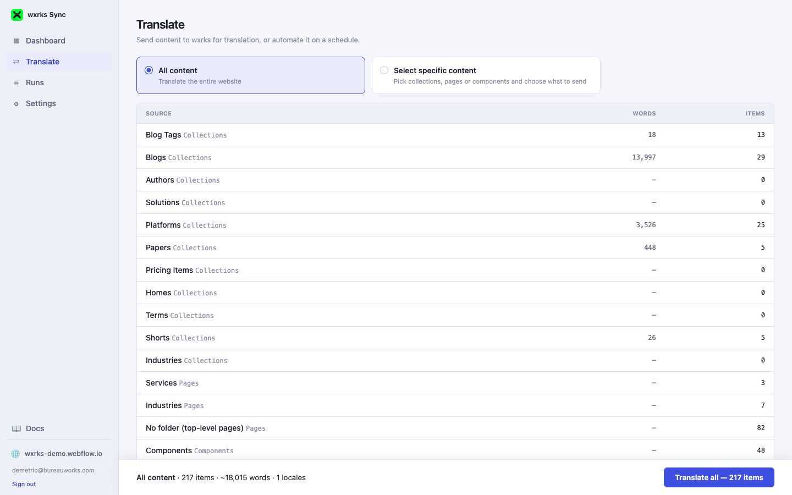
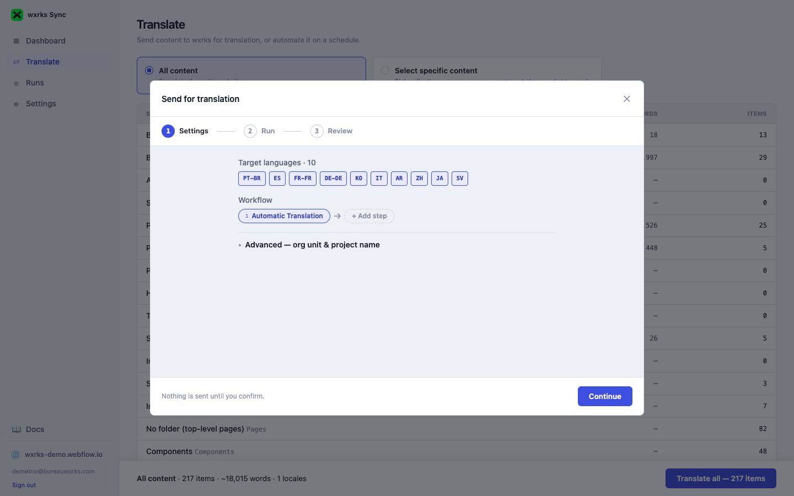
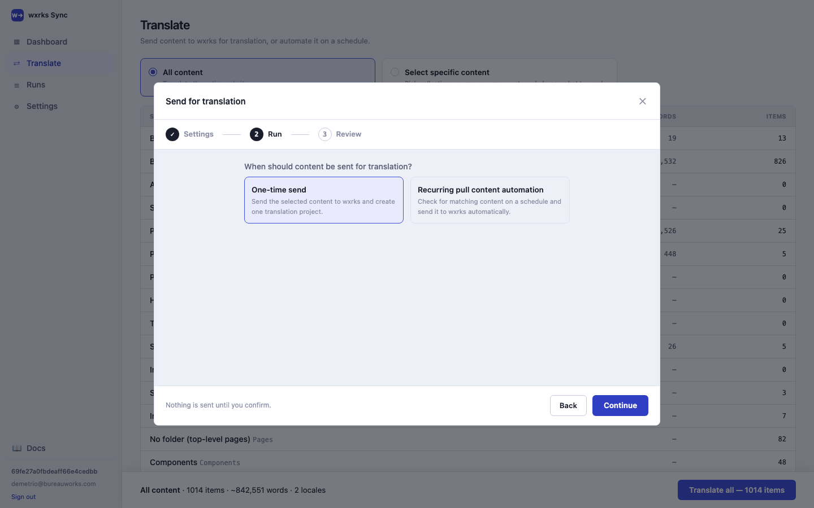
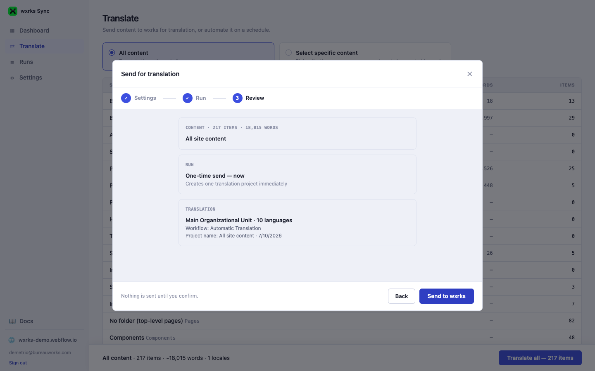

04 · Translating Content
The Translate page
This is where a send starts — either everything on your site, or a hand-picked subset, walked through a 3-step wizard before anything actually goes to wxrks.

Choosing what to send
- All content — every Collection item, Page, and Component on the site.
- Select specific content — pick individual collections, page folders, or components.
Item and word counts load progressively per collection — on a large site this can take a moment, shown as "N of M collections done" while it works in the background.
Understanding sync status
When you choose Select specific content and open a collection, page folder, or the components list, each item shows a Status pill — not just whether it was ever sent, but whether it's actually up to date right now:
| Status | What it means |
|---|---|
| New | Never sent for translation yet (and no translation already exists in Webflow for it either). |
| Synced | Every target language is up to date with the current source content. |
| Stale | It was translated before, but the source has been edited or republished since — it needs sending again. |
| Failed | The last delivery attempt for at least one language errored out. The item's row shows the actual error message. |
Status always looks at the most recent delivery attempt, and compares your source content's last-updated time against when it was last actually delivered — so republishing a page or CMS item after it's already been translated automatically flips it back to Stale, without anyone having to track that by hand.

Full sync vs. selective sync
Both scopes send through the exact same wizard — the difference is entirely in how much you hand-manage versus let the app handle for you.
| Approach | Pros | Cons |
|---|---|---|
| Full site sync "All content" |
Nothing to maintain — new collections, pages, and components are automatically included next time. Simplest to reason about. | Every send re-counts and re-evaluates the whole site, which takes longer on a large site. |
| Selective sync "Select specific content" |
Precise control over exactly what's in scope — useful for a partial rollout, a single collection, or content that isn't ready for translation yet. | Requires deciding scope up front, and revisiting it as your site's structure changes. |
A good rule of thumb: start with All content unless you have a specific reason to hold something back from translation.
The Send to wxrks wizard
Step 1 — Settings

- Target languages — pulled directly from the locales enabled in Webflow's own Localization settings, never a hardcoded list, and pre-selected by default. Webflow silently falls back to the primary locale for any tag it doesn't recognize, so only real, registered locales are ever offered.
- Workflow — starts at Automatic Translation; additional steps can be appended for review processes beyond machine translation.
- Advanced — org unit & project name — collapsed by default since it's usually already pre-filled from your saved settings. Expand it to pick a different wxrks org unit (this also shows any translation memories/glossaries bound to it) or set a custom project name.
Step 2 — Run

- One-time send — sends this exact selection once, right now.
- Recurring pull content automation — saves this scope and schedule as an automation that checks for matching new/changed content and sends it automatically — managed afterward on the Runs & Automations page.
Step 3 — Review

A last look at content scope, run type, and translation settings before anything is actually sent.